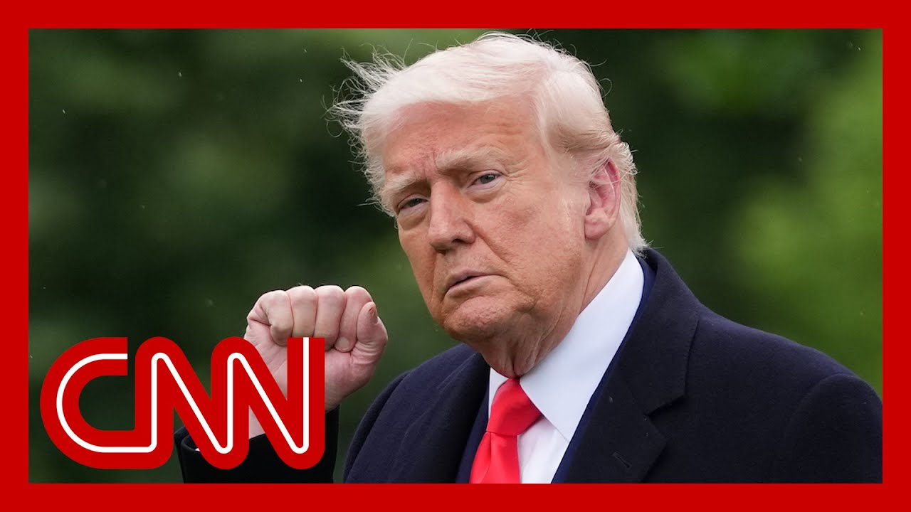

【特朗普威胁对欧盟征收50%关税】
Summary: 突发新闻：特朗普总统宣布计划从6月1日起对欧盟实施50%关税，原因是贸易谈判陷入僵局。他还警告苹果公司，若不在美国生产iPhone将面临25%关税，市场随即下跌。
摘要： 突发新闻：特朗普总统宣布计划从6月1日起对欧盟实施50%关税，原因是贸易谈判陷入僵局。他还警告苹果公司，若不在美国生产iPhone将面临25%关税，市场随即下跌。

⏱️ Estimated Reading Time: 15 min
All right, we've got some breaking news for you.
好的，我们为您带来一则突发新闻。
It's just come in.
消息刚刚传来。
President Trump saying he wants a straight 50% tariff on the EU beginning June 1st because trade talks are stuck.
特朗普总统表示，由于贸易谈判陷入僵局，他希望从6月1日起对欧盟直接征收50%关税。
He is typing away and also going after a U.S. company, a big one Apple, which is already seeing its stocks get ahead.
他正在打字，并针对美国大公司苹果采取行动，该公司股价已开始波动。
Let's go to CNN's Alina Tareen, who is live for us at the white House.
让我们连线CNN的艾琳娜·塔琳，她正在白宫为我们进行现场报道。
Tell us what you know as we're seeing these social media posts come fast and furious this morning.
请告诉我们您了解的情况，今早我们看到这些社交媒体帖子如潮水般涌来。
Yeah, this was definitely a bit of surprise here at the white House, Sara.
是的，萨拉，这对白宫来说确实有些意外。
And we learned of this.
我们得知了这一消息。
He really delivered this new policy via social media.
他确实通过社交媒体发布了这一新政策。
Something of course, the president often does.
这当然是总统经常做的事情。
I want to read to you a little bit of what he wrote, because clearly he has long taken issue with the European Union, and now we're actually seeing that result in real repercussions, ones that, of course, are going to be impacting the market today.
我想给您读一点他写的内容，因为他显然长期以来对欧盟有意见，现在我们实际上看到了由此产生的真正后果，这些后果当然会影响今天的市场。
Once they open, he wrote, quote, the European Union, which was formed for the primary purpose of taking advantage of the United States on trade, has been very difficult to deal with.
市场开盘后，他写道：“欧盟成立的主要目的是在贸易上占美国的便宜，一直很难打交道。”
He went on to say that there powerful trade barriers that taxes, he talked about monetary manipulations, etc., all citing that as reasons for what he argues is a massive trade deficit with the United States.
他接着说，欧盟有强大的贸易壁垒和税收，还谈到货币操纵等，所有这些都被他引为美国与欧盟之间存在巨大贸易逆差的原因。
He went on to say, therefore, I am recommending a straight 50% tariff on the European Union starting on June 1st of 2025.
他接着说：“因此，我建议从2025年6月1日起对欧盟直接征收50%关税。”
There is no tariff. If the product is built or manufactured in the United States.
如果产品在美国建造或制造，则无需关税。
So again, this is a huge development, Sara, because of course, the European Union is one of the biggest.
所以，萨拉，这又是一个重大进展，因为欧盟当然是最大的贸易体之一。
you know, they're not one country, but block that.
你知道，他们不是一个国家，而是一个集团。
The United States and this Trump administration has been trying to negotiate with.
美国和特朗普政府一直在试图与之谈判。
We actually saw the Italian prime minister, Giorgia meloni, come to the white House, earlier a couple of weeks ago, to really negotiate on behalf of the European Union because she, unlike a lot of different, European countries, has a really good relationship
我们实际上看到意大利总理乔治亚·梅洛尼几周前来白宫，代表欧盟进行谈判，因为她与许多其他欧洲国家不同，与美国关系非常好。
And there was a thought process that perhaps she could be the one to kind of assuage some of the president's big frustrations that he has with the EU.
有人认为，她可能是能够缓解总统对欧盟的一些重大不满的人。
As of now. Clearly, it seems that those negotiations have not been going well, that they are stalled.
截至目前，显然这些谈判进展不顺利，陷入了停滞。
And rather than waiting for the end of that 90 day period, remember the president, initially when he had put on these different, tariffs, these reciprocal tariffs for all of these different countries?
而不是等待那90天期限结束，记得总统最初对这些不同国家实施这些不同的互惠关税时吗？
He said when he paused them, that he would give them 90 days, to negotiate these.
他说暂停时，他会给他们90天时间来谈判。
Now the president is moving up the timeline specifically for the EU because he is very frustrated with how he argues, they are treating them for trade.
现在总统特别为欧盟提前了时间表，因为他对他们对待贸易的方式感到非常沮丧。
So major development. He says 50% tariffs will be placed on all of the EU by June 1st.
所以这是一个重大进展。他表示，到6月1日，将对所有欧盟商品征收50%关税。
Yeah. We're also seeing the futures react to that.
是的。我们还看到期货对此作出反应。
And it ain't good.
情况不妙。
things are dropping fast.
市场迅速下跌。
the president didn't just go after the EU though.
不过总统不仅针对欧盟。
He went after a U.S. company.
他还针对一家美国公司。
Apple.
苹果。
What are you learning on that?
您对此有何了解？
It's clear the president is very focused on trade today, Sara, because he also, posted, some sort of warning to Apple CEO Tim Cook.
很明显，总统今天非常关注贸易，萨拉，因为他还在社交媒体上对苹果CEO蒂姆·库克发出了某种警告。
He said, that essentially he wrote, quote, I have long ago informed Tim Cook of Apple that I expect their iPhones that will be sold in the United States of America will be manufactured and built in the United States, not India or any place else.
他说，他写道：“我早就告知苹果的蒂姆·库克，我期望在美国销售的iPhone将在美国制造和生产，而不是印度或其他任何地方。”
He went on to say that if they do not do that, they will be playing a tariff of at least 25%.
他接着说，如果他们不这样做，将面临至少25%的关税。
Now, you mentioned this Apple already falling roughly 2% in premarket trading.
现在，您提到苹果在盘前交易中已经下跌约2%。
I note as well that Tim Cook was actually just here at the white House a couple of days ago on Tuesday to talk with President Trump.
我还注意到，蒂姆·库克实际上几天前的周二刚来白宫与特朗普总统会谈。
But this has also been something that the president has been very fixated on wanting Apple to move manufacturing of iPhones back to the United States.
但这也是总统一直非常关注的事情，希望苹果将iPhone制造搬回美国。
Now, primarily Apple manufactures these iPhones in China, but they've also begun to move some of that production to India because they are, they are in better standing with the United States.
目前，苹果主要在中国制造这些iPhone，但他们也开始将部分生产转移到印度，因为他们与美国的关系更好。
They understand where the president's, kind of frustrations and potential policies could come from.
他们明白总统的沮丧和潜在政策可能来自何处。
But this is really an entirely new concept now that we are hearing from the president that if Apple does not change things and does not change things swiftly, he is going to be placing a 25% tariff on them.
但现在我们从总统那里听到的是一个全新的概念，如果苹果不改变或不迅速改变，他将对他们征收25%的关税。
All to say, between this and what he is doing with the EU, major, major moves that are going to have very big consequences, and I'm sure we'll be seeing some of those in the markets today.
总之，在他对欧盟和苹果采取的行动之间，这些都是将产生重大后果的重大举措，我相信我们今天会在市场上看到一些影响。
We are starting to see them already.
我们已经开始看到这些影响了。
If you look across the board, everything has dropped.
如果你看整体市场，所有东西都在下跌。
This is the gift that nobody really wanted for this holiday weekend.
这是这个假期周末没人真正想要的礼物。
thank you so much, Elena.
非常感谢，艾琳娜。
I know you'll be watching all the details of how this rolls out and the response and reaction.
我知道你会关注所有这些细节如何展开以及各方的反应。
Appreciate it.
非常感谢。
All right, the breaking news this morning.
好的，今早的突发新闻。
just threatened to hit the European Union with a 50% tariff on all imported goods.
刚刚威胁要对所有从欧盟进口的商品征收50%关税。
He says negotiations are not making any progress.
他表示谈判没有任何进展。
You can see stocks futures turning sharply lower.
你可以看到股票期货急剧下跌。
Really the minute he made that threat.
就在他发出威胁的那一刻。
He's also threatening Apple, saying if it does not move production and manufacturing of its iPhones to the U.S., that the company just that one company will be hit by a 25% tariff.
他还威胁苹果公司，称如果苹果不将iPhone的生产和制造转移到美国，这家公司将面临25%的关税。
obviously this comes as many countries in the world have been rattled with his trade threats over the last 6 to 8 weeks.
显然，这是在世界上许多国家在过去6到8周内因他的贸易威胁而感到不安之际发生的。
One of those countries very much includes Canada, and that is where New Hampshire Senator Jeanne Shaheen is this morning.
这些国家中非常包括加拿大，新罕布什尔州参议员珍妮·沙欣今早就在那里。
She is leading a bipartisan group of senators on a visit to Canada to try to smooth things over.
她正带领一个两党参议员小组访问加拿大，试图缓和局势。
we'll get to Canada in just a minute, but it's all connected to what we're hearing now, your take on these new threats, a 50% tariff on the European Union.
我们稍后会谈到加拿大，但这都与我们现在听到的消息有关，你对这些新威胁的看法，对欧盟征收50%关税。
Well, it's unfortunate that the president is going after our strongest allies, because at a time when we're facing adversaries like China and Russia, when the global situation is so precarious, we need to do everything we can to work together with our allies, multiplies one of the biggest advantages the United States has our allies and partners.
不幸的是，总统正在针对我们最强大的盟友，因为在我们面对中国和俄罗斯等对手、全球局势如此不稳定的时候，我们需要尽一切努力与我们的盟友合作，盟友和伙伴是美国最大的优势之一。
And so to be picking a fight now seems to me not to be in America's interest, plus the impact that it's going to have on consumers and businesses.
所以现在挑起争端在我看来不符合美国的利益，再加上这对消费者和企业的影响。
What I'm hearing from business in New Hampshire is their very real concern about tariffs and what it means for their cost of doing business, what it means for their ability to get, supplies and materials that are part of their supply chain is having a huge impact.
我从新罕布什尔州的企业那里听到的是，他们对关税及其对业务成本、获取供应链中的供应和材料能力的真正担忧，这产生了巨大影响。
What about the targeting of a specific company, which also happened this morning with the president threatening Apple?
那么针对特定公司的情况呢？今早总统还威胁了苹果。
Well, again, this is something that's going to have a big impact on consumers.
这又将对消费者产生重大影响。
almost everybody in the country has an iPhone now.
现在几乎全国每个人都有一部iPhone。
They're not all Apple iPhones.
并非所有人都有苹果iPhone。
But for those of us who do, those are going to cost more.
但对于我们这些拥有的人来说，这些手机将更贵。
It's going to have a ripple effect across the economy.
这将对整个经济产生连锁反应。
And I don't think that's the best way for us to address the concerns around our trade imbalance and around what we need to do to ensure that, America is strong when it comes to trade with the rest of the world.
我不认为这是我们解决贸易不平衡问题和确保美国在与世界其他地区贸易中强大的最佳方式。
Just this morning, President Trump is saying in announcing that he is recommending a 50% tariff on all goods coming from the EU starting June 1st.
就在今早，特朗普总统宣布他建议从6月1日起对所有来自欧盟的商品征收50%关税。
And what he's citing is a lack of progress in the trade talks.
他引用的理由是贸易谈判缺乏进展。
At the same time, he's also now threatening again on social media, is threatening Apple with a 25% tariff if it does not build iPhones in America.
与此同时，他再次在社交媒体上威胁苹果，如果不在美国制造iPhone，将面临25%的关税。
As we know, moving Apple's supply chain to America is not something that can be done in a in a hot minute as this plays out.
我们知道，将苹果的供应链转移到美国不是一朝一夕能完成的事情。
Do you think Trump's trade war has a lasting impact on U.S relationships? Friend and foe?
你认为特朗普的贸易战会对美国与朋友和敌人的关系产生持久影响吗？
I think it does, and I think it's almost entirely negative.
我认为会，而且几乎完全是负面的。
You know, I remember way back when conservatives and Republicans believed that the market should set prices in terms of sales and production and that sort of thing, not following the edicts of the American president.
你知道，我记得很久以前保守派和共和党人认为市场应该在销售和生产等方面决定价格，而不是遵循美国总统的命令。
and I also and this is a very important point, I've spoken to many, business leaders, finance leaders around the country, over the past, four months since the inauguration day.
这也是非常重要的一点，过去四个月自就职日以来，我与全国许多商业领袖、金融领袖交谈过。
They have believed, they hope, that the tariffs were just a bargaining tool, just just a tool to fix some things, and then everything would go back to normal.
他们相信，他们希望关税只是一种谈判工具，只是用来解决一些问题，然后一切都会恢复正常。
I don't know that this is enough for some of those true believers, but for everybody else, I would just ask, look at what he's doing.
我不知道这对那些真正的信徒是否足够，但对其他人，我只想说，看看他在做什么。
He believes in these tariffs.
他相信这些关税。
This is going to continue as long as he is in office.
只要他在任，这就会继续。
So I my only hope here on the tariff front is swift decision.
所以我在关税问题上唯一的希望是迅速做出决定。
on the constitutional challenge to these so-called reciprocal tariffs.
对这些所谓的互惠关税的宪法挑战。
Liberation day tariffs like business ought to get behind it.
企业应该支持像解放日关税这样的行动。
Let's move this quickly through the courts and get a decision by the Supreme Court that I think we'll say resoundingly that the whole episode is unconstitutional.
让我们迅速通过法院推动此事，并让最高法院做出决定，我认为最高法院将明确表示整个事件是违宪的。